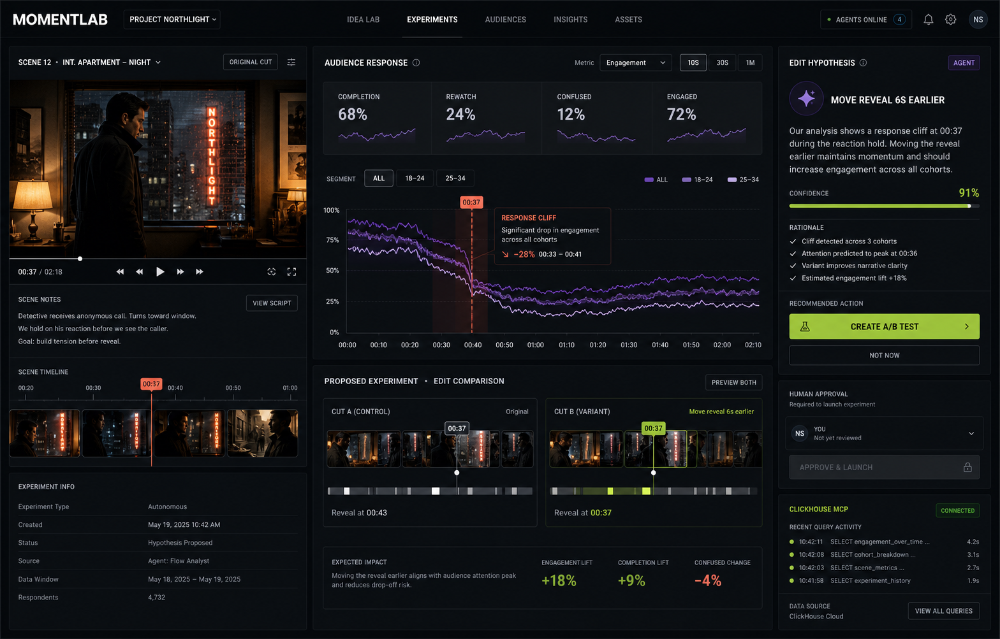
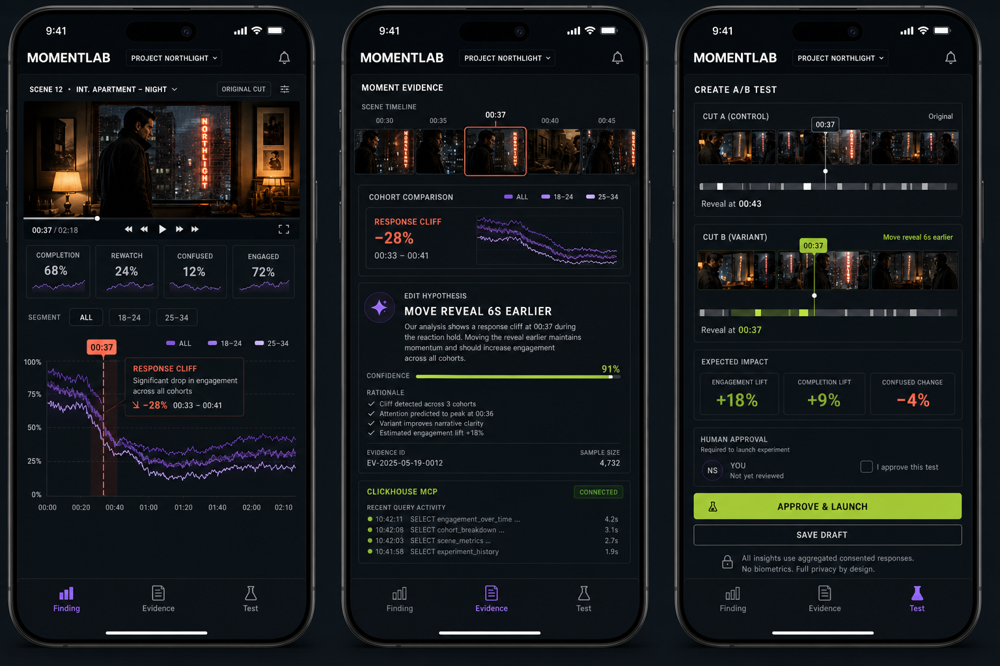

Feedback loses the moment
Test screenings produce averages and scattered comments, but editors cannot reliably connect a response change to the exact creative beat—or know which edit to test next.
PRODUCT BLUEPRINT / VALIDATION READY
MomentLab connects consented audience-response events to exact creative moments, investigates the evidence through ClickHouse MCP, and uses Gemini on Vertex AI to propose a falsifiable edit test for human approval.
01 / PRODUCT VISION
A dense editorial workspace keeps playback, audience evidence, agent reasoning, partner proof, and human control visible in one coherent decision flow.

RESPONSIVE PRODUCT / MOBILE WORKFLOW
MomentLab reorganizes the workspace into three focused, connected routes. It does not shrink the desktop dashboard or discard the evidence chain.
Watch the scene, compare cohorts, and locate the 00:37 response cliff.
Inspect synchronized frames, uncertainty, the edit hypothesis, and live ClickHouse MCP proof.
Compare Cut A and Cut B, review expected impact, and explicitly approve the experiment.

02 / IDEA AT A GLANCE
Test screenings produce averages and scattered comments, but editors cannot reliably connect a response change to the exact creative beat—or know which edit to test next.
The system aligns consented responses to timecode, detects a response cliff, investigates cohorts through MCP, retrieves only relevant scene context, and drafts a bounded edit hypothesis.
Editors receive a testable hypothesis instead of a sentiment dashboard. Researchers retain raw signals, uncertainty, experiment history, and the reason a decision changed.
The demo proves detect, investigate, explain, propose, approve, test, and evaluate—with ClickHouse indispensable and human control explicit.
03 / ADDRESSABLE OPPORTUNITY
Audience researchers, editors, trailer teams, creative executives, and independent filmmakers.
Studios, streamers, trailer agencies, screening vendors, and advertising creative teams.
Independent filmmakers and trailer teams running controlled remote screenings of two short cuts.
Pilot testing, episodic recaps, game cinematics, advertising optimization, and live-event programming.
04 / EVIDENCE PLAN
Judges need a visible result and reproducible evidence—not only a plausible architecture.
The official ClickHouse MCP queries the live screening-event dataset at runtime. Cohort queries, latency, evidence rows, and the tool trail remain visible.
Generate 1,000 deterministic sessions across three cohorts and two cuts, seed a response cliff at 00:37, and verify it with an opt-in holdout.
A memorable agentic loop, measurable outcome, polished cinematic interface, and partner technology that is essential rather than decorative.
Event-time cohort queries and experiment history.
Known anomalies, latency, agreement, and uplift.
Per-screening plans and enterprise subscriptions.
Accessible indie, trailer, and agency beachhead.
05 / GOOGLE-FIRST BUILD
All model inference, agent orchestration, application hosting, identity, media, secrets, and observability stay on Google Cloud. ClickHouse remains the required partner analytical system; standard open-source application libraries are implementation utilities only.
Gemini through Vertex AI
Google ADK + Vertex AI Agent Builder
Cloud Run ingestion; Pub/Sub scale path
ClickHouse Cloud + materialized views
Official ClickHouse MCP
Google Cloud Storage signed URLs
Google Cloud Identity Platform
Aggregation + server-enforced approval
Screening player, consent, event schema, Cut A/B intake.
PROOF: responses align to timecodeClickHouse ingestion, cohorts, views, and official MCP.
PROOF: 00:37 is retrieved liveADK investigation, Gemini context, and hypothesis workflow.
PROOF: evidence-backed edit testVariant evaluation, holdout, timeline polish, and demo.
PROOF: measured loop closureBUILD PRINCIPLE
Build the smallest version that proves the thesis.Open master build prompt ↗